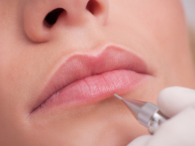
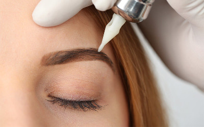

О татуаже
Татуаж, он же перманетный макияж - внедрение специального пигмента в верхние слои дермы с помощью
иглы для создания стойкого рисунка на лице, чтоб подчеркнуть, выделить, скорректировать,
улучшить некоторые черты лица или имитировать обычный макияж.
С помощью перманентного макияжа возможно улучшить форму бровей, губ, век.

Приглашаем Вас на процедуры:
Перманентный макияж бровей в технике "Пудровое (пиксельное) напыление". В результате пудрового напыления брови получаются объемными и мягкими, будто слегка подкрашенными тенями или карандашом.
Перманентный макияж губ в технике "Акварель", получаются очень естественные и нежные губки.
Для более ярко выраженных бровей и губ - перманентный макияж в классической технике (шотирование).
Перманентный макияж век: стрелка, межресничное пространство.
В работе используется только качественный немецкий пигмент и анестезия производства Ю.Корея.
Противопоказания
Абсолютными противопоказаниями считаются:
1. Болезни, связанные со значительным снижением свертываемости крови.
2. Инсулинозависимая форма сахарного диабета
3. Онкология в стадии обострения
4. Острые воспалительные заболевания (ОРВИ,ОРЗ, высокая температура)
5. Кожные заболевания в стадии обострения
6. СПИД, гепатит и другие заболевания крови
7. Склонность к рубцам
8. Употребление алкоголя (Непосредственно до процедуры и за день до нее).
9. Беременность и период лактации
10. Тяжелые соматические заболевания в стадии обострения
11. Инъекции в места татуажа гиалуроновой кислоты (если после инъекции прошло менее полугода)
12. Тремор, эпилепсия, истерические заболевания (невроз, паническая атака, психоз, расстройство личности и пр.)
Относительные противопоказания:
1. Высокое артериальное давление.
Если клиент страдает гипертонией – рекомендуется измерить артериальное давление перед процедурой и при необходимости
принять препарат снижающий давление.
2. Множественные аллергические реакции. В этом случае имеет смысл сделать аллергическую пробу и проверить
как будет реагировать организм на обезболивающие препараты, которые планировали применять в ходе процедуры и на пигмент.
3. Воспалительные заболевания кожи в предполагаемой зоне проведения татуажа (в период их обострения). Угревая болезнь 3и 4
степени (наличие воспалительно-гнойных очагов) и розовые угри (воспалительная форма заболевания) в стадии обострения
являются противопоказанием к проведению процедуры. В этом случае следует пройти курс лечения у врача-дерматолога.
4. Герпес в стадии обострения. Необходимо пройти курс лечения противовирусными препаратами. Людям страдающим частыми
появлениями герпетических высыпаний на губах – татуаж губ очень рекомендован: во-первых после процедуры отпадает
необходимость в частом использовании помады, которая является постоянным источником раздражения красной каймы губ,
,а иногда и инфицирования, во-вторых красная кайма губ после татуажа несколько уплотняется, что является препятствием
для появления высыпаний герпеса.
Памятка перед процедурой ПМ

Накануне татуажа и в день нельзя принимать алкоголь.
Препараты разжижающие кровь (аспирин и другие), препараты для лечения гормональных растройств являються противопоказанием
. (если вы в течение месяца до процедуры проходили лечение антибиотиками или другими сильнодействующими препаратами,
процедуру стоит отложить.) .
Не стоит накануне пить кофе, крепкий чай, энергетические напитки.
Перед татуажем губ, за 2-3 дня и после 5 дней нужно применять препараты против герпеса-например ацикловир, 2 раза в день.
Если клиент аллергик, то приём противогерпесных препаратов осуществляется вместе с антигистаминными препаратами(зиртек, кларитин...)
Перед татуажем век нельзя завивать ресницы. Желательно за день до татуажа не носить линзы.
За пару дней и в дни менструации лучше отложить процедуру.
За сутки и в день татуажа откажитесь от солярия, после нельзя посещать солярий и жаркие страны 2 недели.
В день татуажа Не принимаем витамины.
После процедурный уход за веками.
- Первые сутки после процедуры нанесение гидрокартизоновой глазной мази 0,01% 2
раза в день, либо пантенол, возможно накладывание примочек раствором миромистин на 1-2 минуты
- 2 сутки-и…(до схождения корочек как правило не более 8 дней) нанесение гидрокартизоновой
глазной мази 0,01% 2 раза в день, либо пантенол
- -Для снятия отечности принять антигистаминные средства (Тавегил,Супрастин)
После процедурный уход за бровями
- -Первые сутки промыть Миромистином, нанести тонким слоем вазелин
- -Наносить вазелин 2 раза в сутки до схождения корочки
После процедурный уход за губами
- Герпес - ОЧЕНЬ частое осложнение, возникающее после процедуры. Для профилактики после процедуры в
течение 4-5ти дней принимать Ацикловир 400 мг 2 раза в день либо Вальтрекс.
-Так же на губы наносить вазелин 2 раза в сутки до схождения корочек
ПОЛНОЕ ВОССТАНОВЛЕНИЕ ЦВЕТА ПРОИСХОДИТ В ТЕЧЕНИЕ МЕСЯЦА
В течении этого времени цвет будет несколько раз меняться
-1-5(7) дней после процедуры-цвет очень темный с оттенком коричневого
-5-7(14) дней –цвет в 2-3 раза светлее первоначального, слегка красноватый
-14-21 день-уходит краснота, цвет слегка белесоватый
-21-30 день –цвет темнеет и приобретает запланированный оттенок
После полного заживления при необходимости проводится коррекция
ВАЖНО ЗНАТЬ И ПОМНИТЬ!!!
- Интенсивность цвета выполненного перманентного макияжа уменьшается примерно на 50% после отторжения корочки
- Корочка, образовавшаяся после проведения процедуры, оказывает очень большое влияние на качество процедуры
- корочка должна как можно дольше оставаться на коже
- ни в коем случае нельзя её травмировать и размягчать
- не наносить на нее косметические средства
- по возможности, 24 часа избегать попадания воды
- до заживления не принимать солнечных ванн, избегать посещений сауны и солярия
- не использовать тональный или парфюмерные крема
- при проведении процедуры на губах отказаться от поцелуев до тех пор, пока корочка не заживёт, во избежание попадания бактерий